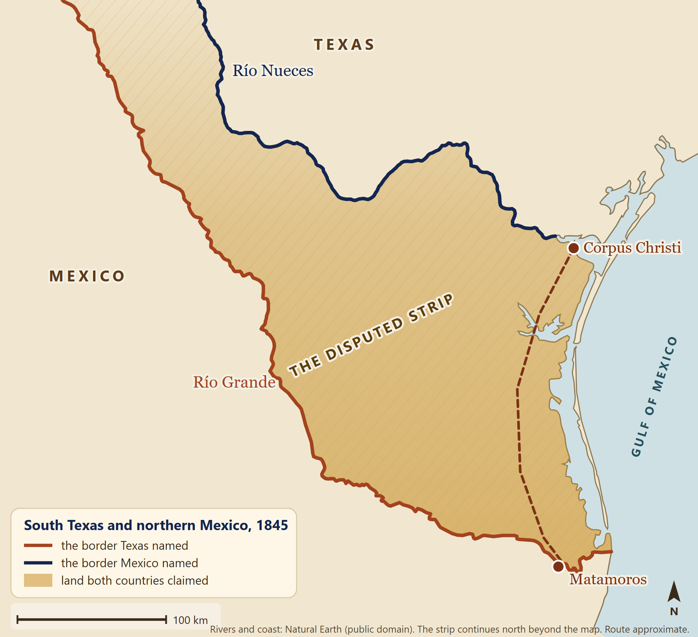

Optima Academy OnlineAn Education Experience Company
7th Grade Texas History · The Mexican-American War
President Polk and The Nueces Crisis
Camp of the Army of Occupation near Corpus Christi, Texas, October 1845. Drawn by D. P. Whiting, lithograph, Library of Congress. Public domain (cropped).
Mini-lesson · Mr. Peregrin
Two Rivers, One Strip of Land
Today's Focus
Two rivers. One strip of land between them. Two countries that each said it was theirs.
In 1845, Texas joined the United States, and a problem came along with it. No one agreed on where Texas ended in the southwest. You will see how that argument turned into a war, and how Texans took part in it.
By the end of this lesson you will be able to…
explain why the land between the Nueces and the Río Grande was disputed.
describe how President Polk’s goals and General Taylor’s march led to war.
explain what the Texas Rangers did in the army.
Quick Check-in
Before you read: how did a war settle the southwestern border that annexation had left undefined? Make your best guess.
Mr. Peregrin
Open the map and tap Enlarge. Find the Nueces, find the Río Grande, and look at the land between them.

The disputed strip. Texas named the Río Grande as its border. Mexico named the Nueces. The shaded land between them was claimed by both. Rivers and coast: Natural Earth, public domain. Route approximate.
⚡ TRY IT · WHOSE CLAIM IS IT?
Each row is something a person might have said about the land between the rivers. Decide which side would say it.
1. “The border is the river farther north. Our old Texas province ended there.”
Right. Mexico said the old border was the Nueces, and it had never accepted Texas as a separate country.
2. “Our congress passed a law in 1836 naming the Big River as the border.”
Right. The Republic of Texas named the Río Grande as its border in 1836.
3. “The dry brush country between the two rivers belongs to us.”
Right. Both countries said the strip was theirs, and that is why it was disputed.
4. “The border should run along the Río Grande, past the town of Matamoros.”
Right. Texas said its border was the Río Grande. Matamoros sat on the south bank, across the river.
James K. Polk. The president who took office in March 1845. Daguerreotype by Mathew Brady, February 1849, Library of Congress. Public domain.Taylor’s camp at Corpus Christi. The army’s camp, as it looked in October 1845, seen from the north. Drawn by D. P. Whiting, lithograph, Library of Congress. Public domain (cropped).
Mr. Peregrin
The same march has two descriptions in this paragraph. Notice whose point of view each one comes from.
Mr. Peregrin
A “what if” question cannot be proved. Notice which parts of this paragraph are known and which are a guess.
⚡ TRY IT · WHO CHOSE WHAT?
Each row names a choice from the road to war. Pick the person or group who made it.
1. Refused to receive John Slidell, the diplomat sent to Mexico City.
Right. Mexico’s leaders refused to see him, in part because any leader who seemed ready to deal could be called a traitor.
2. Gave the order in March 1846 to march the army all the way to the Río Grande.
Think about who commands the army from Washington, not who leads it in the field.
3. Voted to declare war two days after the president’s message about American blood on American soil.
Right. Only Congress can declare war, and it did so on May 13, 1846.
4. Built a fort across the river from Matamoros, and stayed when Mexican officers told him to leave.
Right. Taylor was the general on the spot, and his army’s position set up the clash of April 25.
Jack Hays. One of the Texas Rangers named on this page. Photograph attributed to Mathew Brady, 1857, Library of Congress. Public domain.
Mr. Peregrin
Look at how the page describes this kind of courage. It is not courage in one fight.
The Verdict
Who Did What?
Choose the best answer for each question.
Your Answer Now
Why did the land between the Nueces and the Río Grande become a problem, and how did Polk’s choices and Taylor’s march move the two countries toward war? Answer in three or four sentences, using at least two details from the book.
Keep This in Mind
A border is only a line until someone decides to defend it. Texas claimed the Río Grande. Mexico claimed the Nueces. Polk chose to send an army into the space between. As you read about the war, ask who chose what, and what each person might have done differently.